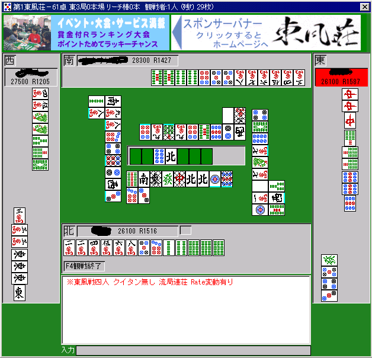

静止画から牌の切られた順序を可能な限り判定する方法
静止画から牌の順序を決定できるか
麻雀中に、静止画像（それまでの局の流れを観察せず、ある瞬間に卓を見る情報）から、ある牌とある牌のどちらが先に切られたかを確実に知ることができるだろうか？
少し考えればわかるだろうが、「できない」。知るために必要な情報は、卓の上には残されていない。
もちろん、食い仕掛けがない場合は、親が第一打を切り、その後順に南・西・北・・・と切っていくわけだから、ある牌とある牌の順序を知ることはできるが、食い仕掛けが入るとややこしくなる。
１順目の東をポンしたのか、２順目の東をポンしたのかは、（卓を見るのがその瞬間前後でない限り通常は）不定となる。
ということは、場合によっては、あるリーチに対してある牌が安全（既に通った）か、そうでないかが一意に定まらない。
「東風荘」では、一応、ポンされた牌に斜線がかかり、どこで捨てられたどの牌がフーロされたか、の情報が残されている。
下図の例では、西家のプレイヤーの６順目の発を、南家がポンしたことがわかり、一見すると牌の順序が一意に定まるように思える。
ところが、ごく限られた状況では、この情報では順序が確定できなくなる。
ある牌が、ある家にしかフーロされていない場合は良いのだが（切り順が確定するが）、同じ牌が複数の人にフーロされている場合、どちらが先かを確定できないことがある。
例えば、全く同じ画面（捨て牌・ターン・フーロ牌）になるような、次の２つの状況を考えてみよ。
（状況Ａ）
東家 打１マン
北家 ポン
北家 打北
東家 打１マン
南家 チー
南家 打南
西家 （リーチ）打西
北家 打北
（リーチに対して１マンは通っていない）
画面： 次は東家のターン
東家 捨て牌 １マン（網）１マン（網）
南家 捨て牌 南 フーロ １マンチー
西家 捨て牌 西（リーチ）
北家 捨て牌 北北 フーロ １マンポン
（状況Ｂ）
東家 打１マン
南家 チー
南家 打南
西家 （リーチ）打西
北家 打北
東家 打１マン
北家 ポン
北家 打北
（リーチに対して１マンは通っている）
画面： 次は東家のターン
東家 捨て牌 １マン（網）１マン（網）
南家 捨て牌 南 フーロ １マンチー
西家 捨て牌 西（リーチ）
北家 捨て牌 北北 フーロ １マンポン
（状況Ａの場合と同じ）
このように、全く同じ静止画面でも、牌の順序が不定である場合があるのだ。
牌の順序が不定になる時
東風荘において、牌の順序が不定になる時はいつか？
どんな静止画であっても、第一打が、親の切った一番最初の牌であることは確定である（実戦であればその牌がポンされてその場所からなくなっている可能性があるため、この時点で不定になる場合もある）。
その牌が他家によってフーロされていないか、フーロされていても相手が確定している場合は、次の１打を確定することができる。
具体的には、フーロされていない場合は「第二打」は南家の第一打であるし、フーロされていて相手が確定している場合は、フーロ者の第一打が「第二打」となる。
その牌がフーロされており、かつその相手として複数が可能な場合にのみ、次の一打が決定できなくなる。
ある１種類の牌を２人の別の人がポンすることはできないから（合計４枚なので、ある人がポン材として２枚持っていて、かつポンした状態では、他の人はポン材を持たない）、このような決定不可能性が生ずる状態とは、その牌がチーされており、かつ、下家以外によって、その牌を切った人からポンされている場合に限られる。
非常に限定された状態でのみ、決定不可能性が表れる。
しかも、上で出した例のように、数順後以降の捨て牌は、再び決定可能に戻る場合もある。
牌の順序を得る方法
プレイヤーAの捨て牌にa番目に並んだ牌が、プレイヤーBの捨て牌にb番目に並んでいる牌よりも順序が先か後かを判別する。
各プレイヤーの「固定された捨て牌の場所（その人によって次に捨てられるべき捨て牌がどこかが一意に定まるもの）」と、「既に評価されたフーロの場所」と、次に牌を切るプレイヤーを与えると、次に決定不可能性が表れるまでの間、順に捨て牌を「固定」してゆく関数を用意する。
「固定」する際に、その牌は「まだ固定されていない牌」よりも「先に切られた」ものとみなす。
ただし、既に順序が決定しているはずの牌に対して、今回の更新が矛盾した場合は、その牌同士の順序は「決定不可能」であるとする。
決定不能性が現れたとき、ポンされた場合とチーされた場合の両方の可能性に対して、この関数を再帰的に呼び出す。
また、牌を全て読み終わったにもかかわらず、他家の捨て牌の過不足が生じていたりする場合は、「そのような分岐のしかた自体が矛盾である」わけなので、その分岐はなかったことにする。
この関数に初期値として「全員の固定された牌は0、次に切るプレイヤーは親」を与えると、この関数が終了したとき、全ての情報が取得できる。
決定不能性が一度も表れない場合は、この関数は再帰呼び出しを使わない。
決定不能性が表れると、この関数はその全ての可能性に対して「順序」を決めようとし、ある可能性と別の可能性が「順序を不定にする」場合にのみ、当該の順序を不定にする。
ただし、ある可能性において、最終的な固定牌枚数と実際の捨て牌の枚数が矛盾する場合は、その可能性下で生じた順序や決定不可能性は全て無視する。
なお、プレイヤーは４人、捨て牌の個数は１人あたり多ければ30枚近くなるため、この情報を例えば
int hai_data[4][32][4][32]
に持たせようとすると、これだけで16キロバイトのメモリを消費してしまう。矛盾が生じた時に変更を取り消すためのバックアップを含めるとかなり大きなサイズになる。
ある牌の、ある牌に対する関係は、「固定されたかどうか」「不定であるかどうか」「順序が先か、後か」程度であるので、
int hai_data[4][32][4][1]
のデータを３つ程度用意し、1つの要素に32枚分のデータをビットごとに入れる方が好ましい。
実装
とりあえず、とつげき東北作成の東風荘画面入出力ダイナミックリンクライブラリ「MJexeIO.dll」のバージョン0.60に、上のアルゴリズムで牌順序をシミュレートする関数を導入した。
まだ作りたてでソースがきちゃないのと、バグが出る可能性もあるので、今のところコードは非公開で。
東風荘の不具合による問題

北家の捨て牌を見て欲しい。
３順目に捨てられた東は、他家によってポンまたはチーまたはカンされている（斜線が入っている）。
実際、西家のフーロ牌を見ればわかるとおり、これは西家によってカン（またはポンの後の加カン）されている。
では、西家の捨て牌を見て欲しい。
６順目に捨てられた６ピンは、他家によってポンまたはチーまたはカンされている（斜線が入っている）。
ところが、実際には、どの他家も６ピンをポン・チー・カンしていない。
実は東風荘にはこのような不具合があり、観戦に入った場合、フーロされていない牌に斜線が入ることがしばしばあるらしい。
観戦時以外にも似たような状況としては、回線落ちして戻ってきた直後などは、これが起きるかもしれない（未確認）。
現段階で、次のような調査をした。
・200回以上観戦を繰り返したうち、10回程度「誤斜線」が入っていた（ワイワイ卓）。
・「誤斜線」があるときは必ず、卓内で「アンカン」または「ミンカン」が少なくとも１つ以上発生していた。
・「誤斜線」の数は、複数回カンされていても１つまでしか確認できなかった。
・カンが入っていて中順くらいにさしかかっていると、必ず「誤斜線」が入っていた。
・カンが入っていても、３順目などでは「誤斜線」は入っていなかった（その後順目が進んだ場合は未確認）。
・一度観戦から抜けて同じ卓に入っても、「誤斜線」の位置は変化しなかった。
・同時に友達と３人で同じ卓に入ったところ、「誤斜線」の牌・位置は全員一致した。
・今のところ、「誤斜線」の入る牌の位置は、捨て牌の４枚目～９枚目までを確認している。
これの影響が懸念されるのは次のような状態である。
東家の捨て牌をチェックしているときに、１順目での９ピンが北家にポンされたのか、７順目での９ピンが北家にポンされたのかがわからない。
それどころか、アルゴリズムによっては、この両方において「ポンされて順序が変化した」と見なしてしまい、関数が全体として「矛盾」である結果を返すこともあり得る。
両方をポンした場合、片方だけをポンした場合、両方とも実はポンでなかった場合・・・などの可能性に分けて再帰呼び出しすることも可能だが、斜線の牌があるたびにこのような処理をしていると、平均的にかかる実行時間はかなり増えてしまうだろう。
現段階ではこのような現象は「特殊」であるとして未対応とする。